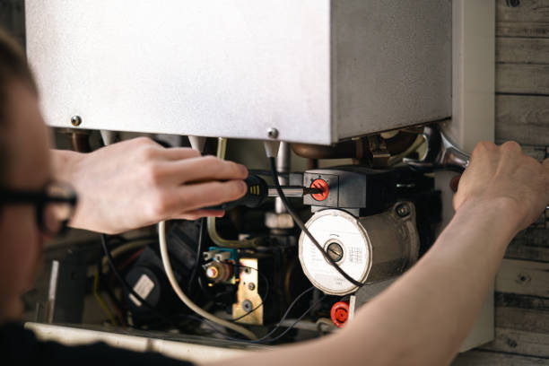

USA - Nationwide
info@usaappliancerepair.pro
USA - Nationwide
info@usaappliancerepair.pro

Stay up to date with technology. Our smart appliance repair services ensure your modern appliances work seamlessly and efficiently.
Get your smart appliances back online! Our technicians specialize in quick diagnostics and repairs. Reach out in Usa - Nationwide for efficient service today!
Residential & commercial Appliance Repair
Quality services at affordable prices
Immediate 24/ 7 emergency services


Is your refrigerator on the fritz? Don't let spoiled food and rising grocery bills affect your household. Our expert technicians specialize in Refrigerator Repair Services in Usa - Nationwide, ensuring your appliance runs efficiently and reliably. We understand that a malfunctioning fridge can be a major inconvenience, which is why we offer same-day service and flexible scheduling to fit your busy life. Our team is trained on all types of refrigerator models, from side-by-side and top freezer units to French door fridges. We utilize state-of-the-art diagnostic tools to identify and quickly resolve any issues, whether it’s a compressor problem, thermostat malfunction, or clogged defrost drain. Choosing us means opting for quality, transparency, and peace of mind. Plus, all repairs are backed by a warranty, so you know you're getting the best service possible .

A malfunctioning washing machine can disrupt your laundry routine and lead to a pile-up of dirty clothes. At our Washing Machine Repair Services we offer comprehensive solutions for all makes and models, including top-load, front-load, and stackable washers. Our skilled technicians are well-equipped to handle issues such as leaks, spin cycle failures, and error codes. We prioritize customer satisfaction and strive for same-day service to get your appliance back to working order. With our extensive knowledge and commitment to quality, you can rely on us for long-lasting solutions. Our transparent pricing and thorough explanations make us the preferred choice for washing machine repairs .

A dryer breakdown can leave you with piles of damp laundry and a lot of frustration. Our Dryer Repair Services in Usa - Nationwide focus on restoring your appliance’s efficiency, so you can get back to your regular laundry routine. We handle issues such as insufficient drying, unusual noises, and overheating. Each of our technicians is skilled in diagnosing problems and carrying out effective repairs swiftly. What sets us apart is our passion for quality service and our attention to detail. We believe that every customer deserves the best, which is why we ensure that every repair is done right the first time. Trust us for your dryer repair needs, and enjoy a hassle-free laundry experience.

When your dishwasher stops working, it can lead to a mountain of dirty dishes and frustration. Our Dishwasher Repair Services are designed to alleviate your inconvenience by providing quick and effective repairs for all models. Our qualified technicians can tackle any issue from leaks and drain problems to electronic malfunctions. We understand that time is valuable, which is why we offer flexible scheduling and strive for same-day services. With our commitment to honesty and transparent pricing, you'll know exactly what to expect when you choose us. Count on our appliance repair specialists in Usa - Nationwide to restore your dishwasher’s efficiency and reliability.

Cooking is an essential part of daily life, and a broken oven or stove can throw your meal plans into chaos. Our Oven and Stove Repair services in Usa - Nationwide are here to make sure your kitchen continues to function seamlessly. From faulty heating elements to complex control board issues, our expert technicians can troubleshoot and repair all types of cooking appliances promptly. We provide thorough inspections and high-quality repairs, and with our customer-first policy, you can expect us to deliver exceptional service that prioritizes your needs. Indulge in our top-rated services and let us take care of your kitchen essentials with professionalism and care.

A microwave is a key appliance in modern kitchens, often relied upon for quick meals and snacks. When your microwave begins to malfunction, it can be a major inconvenience. Our Microwave Repair service specializes in diagnosing and fixing a range of microwave problems including failure to heat, strange sounds, and control panel issues. Our technicians bring years of experience and knowledge, ensuring that each repair is handled with precision. We are dedicated to providing exceptional customer service and efficient repairs, making us the ideal choice for microwave repair . Restore your kitchen convenience with our expert services, and enjoy our commitment to quality.

A malfunctioning garbage disposal can lead to inconvenient and messy situations in your kitchen. Our Garbage Disposal Repair service focuses on identifying the cause of the malfunction, be it a jam, electrical issue, or corrosion. Our qualified technicians assess the problem carefully and offer effective solutions to restore functionality swiftly. As part of our commitment to excellent service, we guide you on proper usage to avoid future issues. We are dedicated to making your kitchen a pleasant environment, which is why we are the preferred choice for garbage disposal repairs . Trust us to deliver quick, reliable, and high-quality repairs.

Your freezer plays a critical role in food preservation and storage. If it stops working, it can lead to wasted food and frustration. Our Freezer Repair Services ensure your appliance remains in peak condition. With years of experience, our technicians can address problems ranging from frost buildup to temperature fluctuations and compressor failures. We understand that every minute counts, which is why we prioritize rapid response and professional service. By choosing us, you're selecting a dependable partner in restoring your freezer’s efficiency—keeping your food fresh and your worries at bay.

Having a reliable ice maker is crucial, especially during hot summer months or for restaurants needing a continuous supply of ice. At Appliance Repair, our Ice Maker Repair services are tailored to diagnose issues quickly and effectively. Whether you’re facing problems with ice production, inconsistent sizes, or leaks, our certified technicians are here to help. We are known for our speedy service and commitment to quality, ensuring that your ice maker is back to full functionality without delay. With our expertise and dedication to your satisfaction, you can trust us for reliable repairs .

A non-functional range hood can lead to unpleasant kitchen odors and increased grease build-up. At Appliance Repair, our range hood repair services ensure your kitchen remains fresh and clean. We specialize in diagnosing issues such as poor ventilation, motor failures, and electrical problems. Our technicians are well-equipped to handle a wide variety of range hood models, providing prompt and effective repairs. We believe in transparent pricing and customer loyalty, assuring you of our dedication to quality service in Usa - Nationwide. Choose us to keep your kitchen air clean.

In the heart of any restaurant or retail establishment, commercial refrigerators play a crucial role in maintaining food safety. Our Commercial Refrigerator Repair Services in Usa - Nationwide specialize in diagnosing and resolving issues that could disrupt your business operations. Our technicians are experienced in servicing a wide variety of commercial units, ensuring minimal downtime and maximal efficiency. We prioritize quick response times and offer flexible service arrangements tailored to your business needs. Trust us to uphold the integrity of your perishable inventory, so you can focus on what you do best – serving your customers – .

In a restaurant, every appliance plays a vital role in service efficiency. At Appliance Repair, we offer comprehensive restaurant appliance repair services, addressing everything from ovens and fryers to refrigeration systems. Our team consists of trained technicians who can quickly diagnose issues and implement effective solutions to minimize your downtime. We recognize the pressures of the restaurant industry, so we offer responsive service tailored to your needs. For thorough and reliable appliance repairs we are the trusted choice.

For businesses relying on industrial dishwashers, downtime is not an option. Our Industrial Dishwasher Repair Services in Usa - Nationwide focus on delivering fast and effective solutions for your high-capacity needs. Whether you operate a large-scale restaurant, cafeteria, or institution, our skilled technicians are equipped to handle all brands and types of industrial dishwashers. We offer same-day service and a commitment to quality repairs that keep your operations running efficiently. Customer satisfaction and operational integrity are our key priorities, and you can depend on our expertise in Usa - Nationwide for swift and reliable repairs.

A malfunctioning oven or range in a commercial setting can significantly impact performance and customer satisfaction. At Appliance Repair, we deliver expert commercial oven and range repair services designed to keep your kitchen running smoothly. Our team is proficient in handling all types of commercial cooking equipment, ensuring quick diagnostics and repairs, from temperature inconsistencies to ignition failures. We value your time and work diligently to provide timely service, ensuring your appliances are back in operation swiftly. Trust us for unparalleled oven and range support .

The integrity of your walk-in freezer is vital for managing inventory in commercial food services. At Appliance Repair, we specialize in walk-in freezer repair services to address any critical issues, from compressor failures to insulation problems. Our skilled technicians maintain a strong understanding of commercial refrigeration, ensuring effectively tailored repair solutions. Our dedication to quick turnaround times and quality repairs means your operations remain uninterrupted. Choosing us ensures you receive elite service .

For commercial laundry facilities, functionality is key to maintaining operations. Our Laundry Equipment Repair Services cater to businesses needing timely repairs on washers, dryers, and folding equipment. Our skilled technicians can handle all kinds of problems, from mechanical failures to electronic issues. We understand that operational downtime affects your bottom line, which is why we prioritize prompt, effective service designed to get your laundry equipment back in working order as soon as possible. Trust our proven track record and extensive experience in Usa - Nationwide to keep your business running smoothly.

Air conditioning and appliance integration is becoming increasingly important in modern households and businesses. At Appliance Repair, we provide HVAC and appliance integration repairs that ensure your systems work in harmony. Our team of experts understands the complexities of advanced home setups, from smart thermostats to integrated appliances. We focus on providing solutions that enhance operational efficiency and comfort in your space. Choose us for our commitment to innovative repair methods and customer-centric service . Your comfort is our priority.

Bakeries rely heavily on a variety of specialized equipment that must function properly to ensure the quality of their products. Our Bakery Equipment Repair Services cover ovens, proofers, mixers, and more, providing comprehensive solutions tailored to meet the unique demands of the baking industry. Our experienced technicians understand the urgency of repairs in this fast-paced environment, making prompt response and service our priority. With our commitment to quality and customer satisfaction, bakery owners can rely on us to keep their equipment operating smoothly, ensuring that production schedules are met without delay .

Food trucks operate in high-pressure environments, where appliance reliability is essential for success. Our Food Truck Appliance Repair Services cater to the unique needs of mobile vendors, ensuring your cooking equipment remains functional on the go. From fryers and grills to refrigerators and freezers, our skilled technicians can diagnose and repair a variety of issues efficiently. We understand the challenges food truck operators face and provide flexible scheduling to accommodate your busy lifestyle. Trust us to minimize downtime and maintain the quality of your mobile food service operations .

For retail businesses, a refrigerated display case is vital for product presentation and preservation. If your display cases are not functioning correctly, it can compromise your products’ quality. Our Refrigerated Display Case Repair services are designed to identify and solve issues swiftly, ensuring your products remain in top condition. Our trained technicians are experienced in handling various makes and models, focusing on restoring your display cases to full functionality. Count on us for reliable, quality repairs to enhance your business’s visual appeal and operational efficiency .

When it comes to luxury kitchen appliances, experiencing a malfunction can be frustrating. Our High-End Appliance Repair services are specialized to meet the unique needs of premium brands. Our technicians are particularly skilled in handling complex systems and advanced technologies that define luxury appliances. We offer meticulous repairs with an emphasis on protecting your investment, maintaining both function and aesthetics. Choose us for your high-end appliance repair needs and experience the precision and excellence that your luxury brand deserves.

Portable appliances provide convenience, from mini-fridges to compact microwaves. However, they can encounter issues over time. Our Portable Appliance Repairs address everything from power failures to heating problems, ensuring your appliances serve you well. We specialize in diagnosing issues promptly and providing effective repairs, allowing you to continue enjoying the flexibility these appliances offer. Trust our expertise for your portable appliance needs, and get ready to enjoy convenience without interruption .

As sustainable living becomes more important, maintaining energy-efficient appliances is crucial. Our Energy-Efficient Appliance Repair Services focus on repairing and optimizing your environmentally-friendly appliances, ensuring they function efficiently to reduce waste. From dishwashers to refrigerators, our expert technicians are adept at diagnosing issues that could hinder performance. By choosing us, you not only restore your appliances’ efficiency but also contribute to a more sustainable future. Count on us for reliable repairs and exceptional service .

Appliance emergencies demand immediate attention to avoid further complications. At Appliance Repair, we offer emergency appliance repair services, available around the clock to tackle your urgent needs. Our skilled technicians are always ready to respond to issues that cannot wait, delivering prompt and effective repairs for all types of appliances. We believe in a customer-centric approach, ensuring you receive support precisely when you need it. For emergency repairs trust us to resolve your crisis efficiently.

Regular maintenance is the key to prolonging the life of your appliances. At Appliance Repair, we offer customized appliance maintenance plans designed to fit your individual needs. Our plans include routine inspections, timely servicing, and preventive repairs, ensuring your appliances operate at peak performance. Our technicians are trained to identify potential issues before they escalate into costly repairs, securing your appliance investments for years to come. Choose us for affordable and comprehensive maintenance solutions tailored to your home or business in Usa - Nationwide.
Proper installation is crucial for your appliances to function optimally. Our Appliance Installation and Setup Services ensure that your new appliances are installed correctly and safely. Our skilled technicians are experienced in handling a variety of home and commercial appliances, providing expert setup along with any necessary repairs. We take the hassle out of appliance installation, offering seamless service that prioritizes quality and safety. Count on us for top-notch installation and repair services tailored to your needs and experience the quality of professional service.
Gas appliances are efficient and can enhance your kitchen’s performance, but they must be handled with care. Our Gas Appliance Repair Services ensure that your gas appliances function safely and efficiently. Our trained technicians understand the complexities of gas systems and are skilled in identifying and repairing any issue. Whether you need repairs for a gas oven, stove, or water heater, trust us for thorough diagnostics and reliable service. Safety is our priority, which is why we adhere to all codes and regulations. Choose our skilled team for dependability and expertise in all gas appliance repairs .
The control panel is the brain of your appliances; when it fails, it can disrupt their operation. Our Appliance Control Panel Repairs in Usa - Nationwide focus on restoring functionality to your kitchen and laundry devices. Our experienced technicians are adept at troubleshooting control panel issues, including faulty buttons, inconsistent displays, and wiring problems. We prioritize quality and accuracy in every repair, using only original parts to ensure reliability. Choose us for meticulous service, and restore your appliance’s performance with our specialized repair solutions .
Vintage or antique appliances are treasured parts of many homes, offering charm and nostalgia. Our Vintage or Antique Appliance Repair services cater to those who wish to maintain the unique qualities of their older appliances. Our technicians are well-versed in the intricacies of vintage models, offering specialized repairs that retain the appliance's original character while ensuring functionality. We understand the value of these appliances, both sentimentally and economically, which is why we provide careful, dedicated service that respects their legacy. Choose us for your vintage appliance restoration needs and keep the spirit of your home alive.
USA - Nationwide Appliance Repair Pros
(877) 848-1711
info@usaappliancerepair.pro
09.00 AM - 09.00 PM
09.00 AM - 12.00 PM